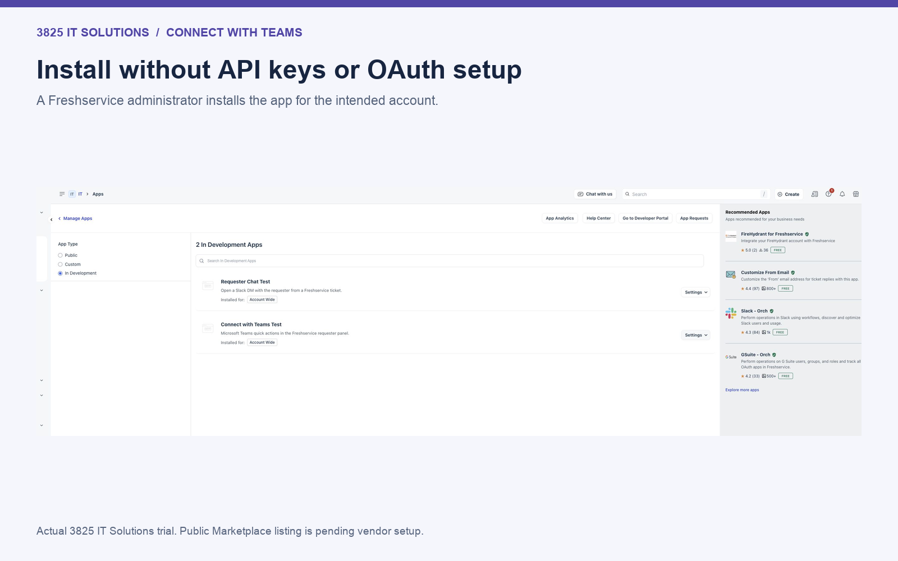
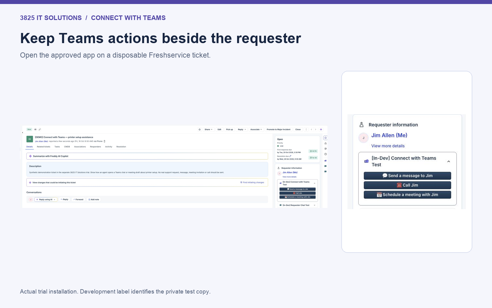
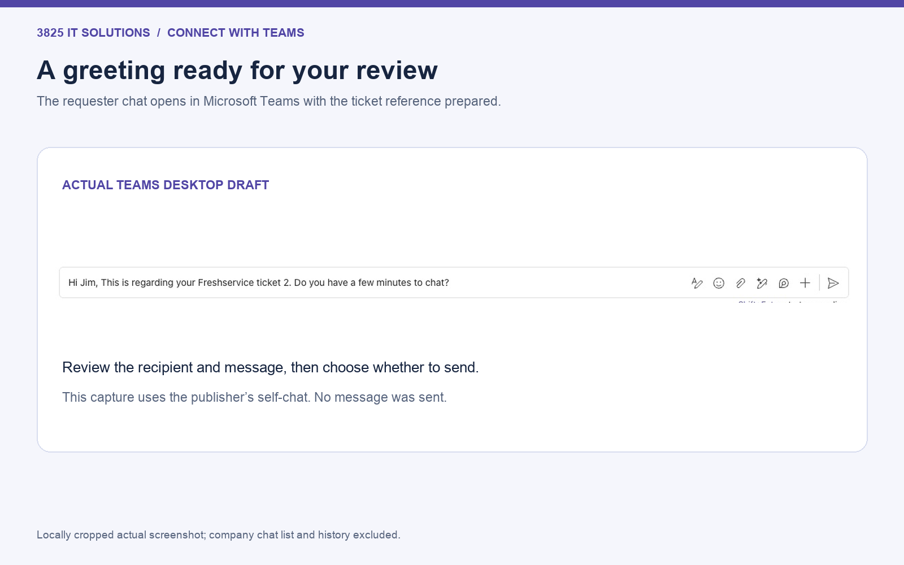
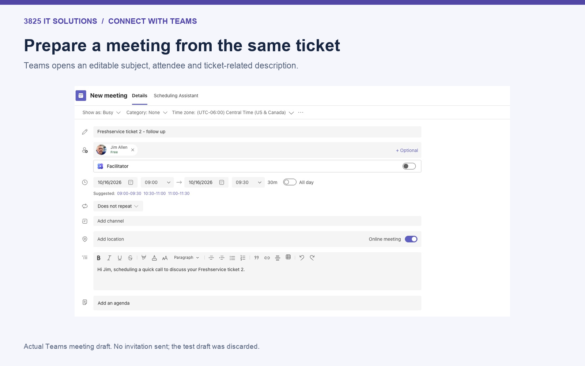

From ticket to Teams
A walkthrough captured from the approved app in the separate 3825 IT Solutions trial.
28-second silent screenshot walkthrough, not a continuous screen recording. Actual UI captures are cropped and captioned for clarity and privacy.
1. Install without connection credentials
The approved version requires no API key, Microsoft OAuth connection or configuration parameters.

2. Open requester actions
On the demonstration ticket, the app shows message, call and meeting buttons. Group chat appears when eligible CC addresses are present; this ticket has no CCs.

3. Review a prepared chat
The actual Teams desktop self-chat opened with the ticket greeting in its composer. No message was sent. Company conversations and chat history are excluded from this crop.

4. Prepare a meeting
The actual meeting draft includes the ticket number, requester and prepared description. It was discarded without sending an invitation.

Test scope
Captured October 16, 2026 from the unchanged publisher-confirmed approved package. The development label is the private test-installation name. Calls were not placed and group-chat opening was not live-tested. Teams desktop opened successfully; Teams web returned a browser connection error in this test environment, so no web-client success is claimed.
Setup and support